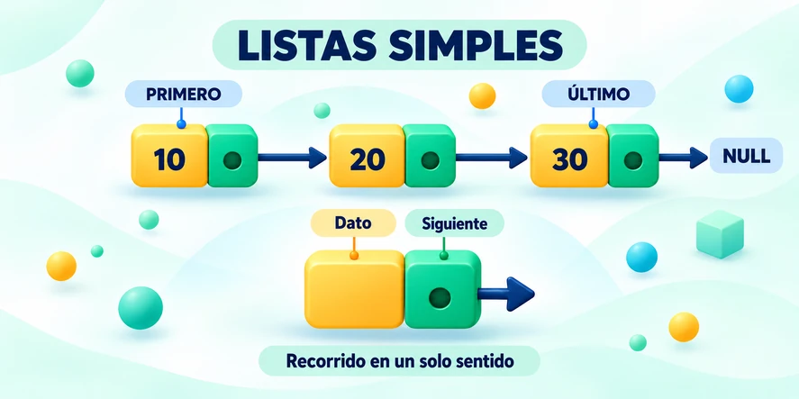
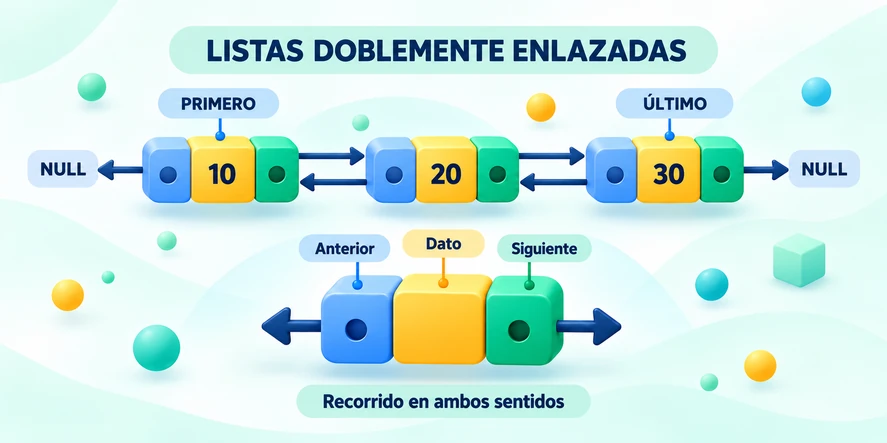
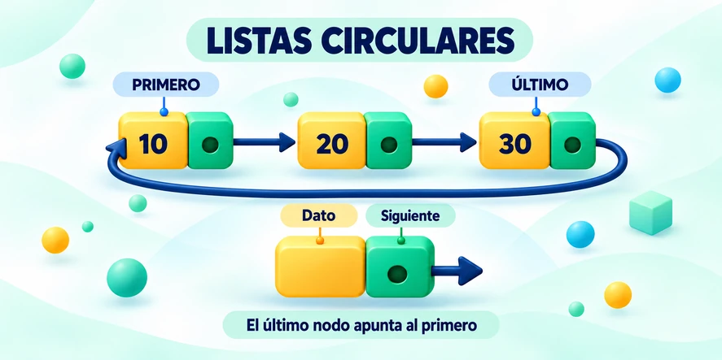
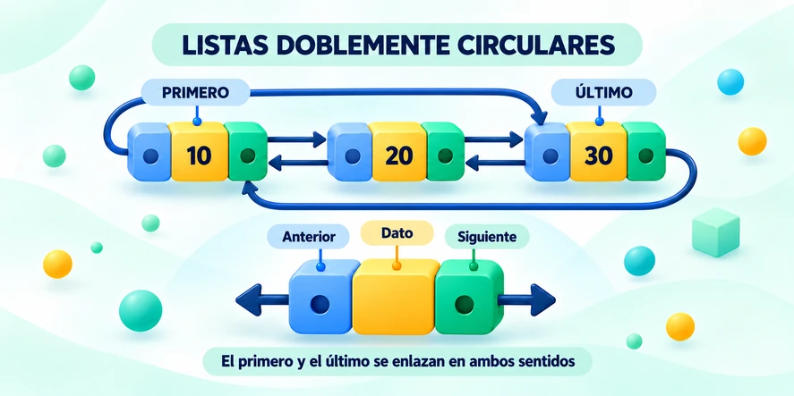

Duración: 6 horas
1 · ¿QUÉ ES?
Una lista enlazada es una estructura dinámica formada por nodos.
2 · ¿PARA QUÉ SIRVE?
- Almacenar datos variables.
- Insertar y eliminar elementos.
- Construir pilas y colas.
- Administrar registros dinámicos.
3 · ¿CÓMO FUNCIONA?
- Cada nodo guarda un dato.
- Los enlaces conectan nodos.
- La lista se recorre siguiendo enlaces.
- El tamaño cambia en ejecución.
4 · USOS EN COMPUTACIÓN
- Agendas y catálogos.
- Procesos e historiales.
- Sistemas de turnos.
- Otras estructuras dinámicas.

Una lista enlazada es una estructura de datos dinámica. A diferencia de un arreglo, sus elementos no tienen que estar almacenados en posiciones consecutivas de memoria. Cada nodo contiene información y uno o más enlaces que permiten localizar otros nodos.
dato
siguiente
El campo dato almacena la información y siguiente guarda la referencia al próximo nodo.
Estructura básica en C
En una lista sencilla, cada nodo contiene un enlace hacia el nodo siguiente. El primer nodo se denomina normalmente CABEZA. El último nodo apunta a NULL.

Insertar al inicio
Insertar al final
Recorrido
Eliminación
Antes: 10 → 20 → 30 → 40 → NULL
Eliminar: 20
Después: 10 → 30 → 40 → NULL
Una lista doblemente enlazada contiene dos enlaces en cada nodo: uno al nodo anterior y otro al nodo siguiente. Esto permite desplazarse en ambos sentidos.

Estructura básica en C
Recorrer hacia adelante
Recorrer hacia atrás
En una lista circular, el último nodo vuelve a enlazarse con el primero. No existe un NULL natural que marque el final.

Estructura básica en C
Recorrido circular

Las listas enlazadas son apropiadas cuando la cantidad de elementos puede cambiar durante la ejecución. No es necesario definir previamente el número exacto de registros.
| Aplicación | Ejemplo |
|---|---|
| Registro dinámico | Estudiantes que se agregan conforme llegan. |
| Catálogos | Productos que pueden insertarse o eliminarse. |
| Agenda de contactos | Registros enlazados de tamaño variable. |
| Procesos e historiales | Secuencias dinámicas de tareas o eventos. |
| Otras estructuras | Base para pilas, colas y otras estructuras dinámicas. |
Problema propuesto · Lista de estudiantes
Una institución necesita mantener temporalmente una lista de números de matrícula. Debe permitir registrar, mostrar, buscar y eliminar matrículas.
| Tipo de lista | Enlaces por nodo | Recorrido | Final |
|---|---|---|---|
| Sencilla | 1 | Hacia adelante | NULL |
| Doble | 2 | Adelante y atrás | NULL |
| Circular | 1 o 2 | Cíclico | Regresa al inicio |
- Qué es un nodo y cuál es el papel de los punteros.
- Diferencias entre lista sencilla, doble y circular.
- Representación gráfica de una lista enlazada.
- Inserción, búsqueda, recorrido y eliminación.
- Uso de pseudocódigo para expresar algoritmos.
- Selección del tipo de lista apropiado para un problema.
- Relación entre listas enlazadas y memoria dinámica en C.
TIPOS DE LISTAS ENLAZADAS
Explora cada tipo de lista y compara cómo cambian sus enlaces, recorridos y aplicaciones.
En una lista enlazada, lo importante no es únicamente dónde se encuentra almacenado un dato, sino qué nodo conoce la dirección del siguiente elemento.
Simulador · Lista simple desordenada
Los nuevos nodos se agregan al final sin reorganizar los valores. Cada nodo apunta únicamente al siguiente.
Simulador · Lista simple ordenada
Cada nuevo valor se inserta en la posición que conserva el orden ascendente. El simulador muestra dónde debe enlazarse el nuevo nodo.
Simulador · Lista doble ordenada
Cada nodo mantiene un enlace al anterior y otro al siguiente. Los valores se insertan ordenados para visualizar los recorridos ascendente y descendente.
Simulador · Lista circular simple
El último nodo no apunta a NULL: su enlace siguiente regresa al primer nodo. El recorrido termina después de completar exactamente una vuelta.
Simulador · Lista doble circular
Combina enlaces anterior/siguiente con una estructura circular. El primer y el último nodo quedan conectados en ambos sentidos.